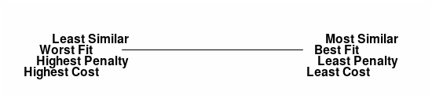

Atabey Kaygun
Tuesday, March 15, 2022

\[\sum_x\|f(x)-g(x)\|_p\]
\[ \sum_x p(x) \log (p(x)/q(x)) \]
\[Sim(x,y) = (x\cdot y)/\|x\|\|y\|\]
\[ Cost(\theta) = \sum_x dist(f(x,\theta),y) \]
Gradient descent
\[\theta_{n+1} = \theta_n + \gamma \nabla F(\theta_n)\]
\[ Cost(\theta) = \Psi(\theta) + \sum_x dist(f(x,\theta),y) \]
\[argmin_p \sum_x \|x-p(x)\|\]